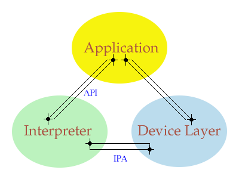

The figure below illustrates the tripartite division of application, interpreter, and device layer. The internal workings of each of the three is irrelevant; all that matters is the three interfaces which are separate. The core of libwmf is the interpreter, and as such only the interfaces between (a) the interpreter and the application - the API - and (b) the interpreter and the device layer - the IPA - are defined. Applications that wish to implement their own new device layer are free therefore to define whatever interface is suitable.
|  |
libwmf includes two device layers: eps for conversion to EPS (Encapsulated Postscript) or PS (Postscript); and gd for conversion to PNG or JPEG image formats. Included with libwmf are converters for these: wmf2eps and wmf2gd respectively. The source-code for these is an excellent place to see how to use the various features of the API and device-layer interfaces.
All libwmf header files are now in a libwmf subdirectory. In general you will need to include two. Unless you are writing a new device layer, which will be discussed later, you should include only libwmf/api.h and the header for whichever device layer you are interested in, for example:
#include <libwmf/api.h> #include <libwmf/gd.h>
The gd device layer uses the GD library, included with libwmf, to output images in PNG (or possibly in JPEG) format. Alternatively, if you wish the output to be in PS or EPS format, you would include:
#include <libwmf/api.h> #include <libwmf/eps.h>
For each metafile you wish to process and convert to a given image type, you must create an instance of the API. This can be sophisticated or simple. In its simplest form, the only thing that needs to be specified is which device layer you wish to use. For example, to use GD:
wmfAPI_Options options;
wmfAPI* API;
wmf_error_t error;
unsigned long flags;
/* */
flags = WMF_OPT_FUNCTION;
options.function = wmf_gd_function;
/* Other Options */
error = wmf_api_create (&API,flags,&options);
if (error != wmf_E_None)
{ wmf_api_destroy (API);
/* */
}
/* */
The library performs all memory allocation with respect to the API, and destroying the instance will free up all associated memory:
error = wmf_api_destroy (API);
There are a number of different options which can be used when creating the API. The structure of wmfAPI_Options is:
typedef struct _wmfAPI_Options wmfAPI_Options;
struct _wmfAPI_Options
{ void* context;
void* (*malloc) (void* context,size_t size);
void* (*realloc) (void* context,void* mem,size_t size);
void (*free) (void* context,void* mem);
int argc;
char** argv;
char** fontdirs; /* NULL-terminated list of directories to search for font files */
struct
{ wmfFontMap* wmf; /* {0,*}-terminated list: wmf-font-name -> ps-font-name */
wmfMapping* sub; /* {0,*}-terminated list: wmf-font-name substring equiv */
wmfMapping* ps; /* {0,*}-terminated list: ps-font-name -> pfb-file-name */
} font;
char* sys_fontmap_file;
char* xtra_fontmap_file;
void (*function) (wmfAPI*);
char* module;
char** dirs;
FILE* debug_out;
FILE* error_out;
};
flags |= WMF_OPT_ALLOC; options.context = my_memory_manager_data; options.malloc = my_malloc; options.realloc = my_realloc; options.free = my_free;
--wmf-ignore-nonfatal ignore any non-critical errors or unsupported features --wmf-error=no suppress error reports --wmf-debug=no suppress debug reports --wmf-diagnostics emit diagnostic information (for analysis of metafiles) --wmf-fontdir=<path> add <path> to list of directories searched for fonts --wmf-sys-fonts use system fonts, if any found --wmf-sys-fontmap=<file> use system xml-fontmap file <file> (implies --wmf-sys-fonts) --wmf-xtra-fonts use non-system fonts, if any found --wmf-xtra-fontmap=<file> use non-system xml-fontmap file <file> (implies --wmf-xtra-fonts)where the command line is specified by:
int main (int argc,char** argv)
{ /* */
flags |= WMF_OPT_ARGS;
options.argc = argc;
options.argv = argv;
char* dirs[3] = { "/usr/share/fonts", "/usr/local/share/fonts", NULL };
/* */
flags |= WMF_OPT_FONTDIRS;
options.fontdirs = dirs;
flags |= WMF_OPT_SYS_FONTS; flags |= WMF_OPT_SYS_FONTMAP; options.sys_fontmap_file = "/usr/local/share/fonts/fontmap";
flags |= WMF_OPT_XTRA_FONTS; flags |= WMF_OPT_XTRA_FONTMAP; options.xtra_fontmap_file = "/usr/local/share/libwmf/fonts/fontmap";
flags |= WMF_OPT_IGNORE_NONFATAL;
flags |= WMF_OPT_NO_ERROR;
flags |= WMF_OPT_NO_DEBUG;
FILE* e_out;
/* */
e_out = fopen ("error.log","w");
if (e_out)
{ flags |= WMF_OPT_LOG_ERROR;
options.error_out = e_out;
}
FILE* d_out;
/* */
d_out = fopen ("debug.log","w");
if (d_out)
{ flags |= WMF_OPT_LOG_DEBUG;
options.debug_out = d_out;
}
In addition to creating the API, wmf_api_create sets up the link with the device layer. Device layer data can be accessed through API->device_data, but the implementation will probably provide a convenient interface. For example, with GD:
wmfAPI_Options options;
wmfAPI* API;
wmf_error_t error;
wmf_gd_t* ddata;
unsigned long flags;
/* */
flags = WMF_OPT_FUNCTION | WMF_OPT_IGNORE_NONFATAL;
options.function = wmf_gd_function;
/* Other Options */
error = wmf_api_create (&API,flags,&options);
if (error != wmf_E_None)
{ wmf_api_destroy (API);
/* */
}
ddata = WMF_GD_GetData (API);
if ((ddata->flags & WMF_GD_SUPPORTS_JPEG) == 0)
{ fprintf (stderr,"libwmf does not support JPEG conversion!\n");
wmf_api_destroy (API);
/* */
}
/* */
At this point there is little need to acknowledge the device layer, except if (as in the above example) the device layer indicates possible restrictions.
Before playing the metafile (i.e., rendering the image) it is necessary first to open the metafile and second to scan it. To open a metafile that is a file on disc is simple:
error = wmf_file_open (API,"file.wmf");
if (error != wmf_E_None)
{ wmf_api_destroy (API);
/* */
}
The file needs to be closed later by calling:
error = wmf_file_close (API);
Alternatively, if the metafile is preloaded in memory, it can be opened with:
error = wmf_mem_open (API,(unsigned char*) buffer,(long) buffer_length);
if (error != wmf_E_None)
{ wmf_api_destroy (API);
/* */
}
and closed later by calling:
error = wmf_mem_close (API);
A third, more generic method is available as well, but requires more work. For example, to `open' an already-open file stream:
int my_wmfRead (void*);
int my_wmfSeek (void*,long);
long my_wmfTell (void*);
/* User redefinable functions for input-stream access:
* wmfRead: returns unsigned char cast to int, or EOF
*/
int my_wmfRead (void* context)
{ return (fgetc ((FILE*) context));
}
/* User redefinable functions for input-stream access:
* wmfSeek: returns (-1) on error, else 0
*/
int my_wmfSeek (void* context,long position)
{ return (fseek ((FILE*) context,position,SEEK_SET));
}
/* User redefinable functions for input-stream access:
* wmfTell: returns (-1) on error, else pos
*/
long my_wmfTell (void* context)
{ return (ftell ((FILE*) context));
}
/* */
error = wmf_bbuf_input (API,my_wmfRead,my_wmfSeek,my_wmfTell,(void*) in);
if (error != wmf_E_None)
{ wmf_api_destroy (API);
/* */
}
Once the metafile has been opened, it must be scanned. Scanning parses the metafile without any interaction with the device layer, and its purpose is (a) determine whether it is a valid metafile, and (b) estimate the dimensions of the metafile.
wmfD_Rect bbox;
/* */
error = wmf_scan (API,0,&bbox);
if (error != wmf_E_None)
{ wmf_api_destroy (API);
/* */
}
A metafile needs to be scanned, but only once. wmf_scan will reject any further attempts to scan; wmf_play (see below) will fail unless the metafile has been scanned.
Metafiles are basically a vector-graphic format and as such they can be scaled to any size and aspect ratio. The interpreter describes the metafile in a scaleable manner to the device layer, and the device layer is free to scale the metafile in any manner it chooses. As such, the device layer will almost certainly require (a) the dimensions of the metafile found by wmf_scan (see above), and (b) the image width and height desired by the application.
wmfD_Rect describes a bounding box in the interpreter's device coordinates, and is defined as:
typedef struct _wmfD_Coord wmfD_Coord;
typedef struct _wmfD_Rect wmfD_Rect;
struct _wmfD_Coord
{ float x;
float y;
};
struct _wmfD_Rect
{ wmfD_Coord TL;
wmfD_Coord BR;
};
and so an application can determine the image's aspect ratio by:
float aspect_ratio; /* */ aspect_ratio = (bbox.BR.y - bbox.TL.y) / (bbox.BR.x - bbox.TL.x);
Note: By definition bbox.BR.y > bbox.TL.y and bbox.BR.x > bbox.TL.x
Putting this all together, and again using GD as an example:
wmfAPI_Options options;
wmfAPI* API;
wmfD_Rect bbox;
wmf_error_t error;
wmf_gd_t* ddata;
unsigned long flags;
FILE* out;
/* */
flags = WMF_OPT_FUNCTION | WMF_OPT_IGNORE_NONFATAL;
options.function = wmf_gd_function;
/* Other Options */
error = wmf_api_create (&API,flags,&options);
if (error != wmf_E_None)
{ wmf_api_destroy (API);
/* */
}
ddata = WMF_GD_GetData (API);
if ((ddata->flags & WMF_GD_SUPPORTS_JPEG) == 0)
{ fprintf (stderr,"libwmf does not support JPEG conversion!\n");
wmf_api_destroy (API);
/* */
}
error = wmf_file_open (API,"file.wmf");
if (error != wmf_E_None)
{ wmf_api_destroy (API);
/* */
}
error = wmf_scan (API,0,&bbox);
if (error != wmf_E_None)
{ wmf_api_destroy (API);
/* */
}
out = fopen ("file.jpeg","w");
if (out == 0)
{ wmf_api_destroy (API);
/* */
}
ddata->type = wmf_gd_jpeg;
ddata->flags |= WMF_GD_OUTPUT_FILE;
ddata->file = out;
ddata->bbox = bbox;
ddata->width = (unsigned int) ceil (ddata->bbox.BR.x - ddata->bbox.TL.x);
ddata->height = (unsigned int) ceil (ddata->bbox.BR.y - ddata->bbox.TL.y);
The above example doesn't do anything intelligent with the size of the image. The converter wmf2gd sets a maximum size and scales the image accordingly.
The final step is simply to play the metafile:
error = wmf_play (API,0,0);
if (error != wmf_E_None)
{ wmf_api_destroy (API);
/* */
}
This can be done any number of times, with varying device layer settings if desired.
There are a number of issues with fonts and libwmf to complicate matters: the first is the need to translate font names specified into font names recognized by libwmf; the second is to find the corresponding font files; a third is to work out what encoding (char. set) to use. Described below is libwmf's native mechanism for dealing with these issues. While versatile, unfortunately it requires significant effort on the part of an application that seeks to extend the limited font mapping provided by default. A second (experimental and optional) mechanism is provided also, and this reads an XML file containing font information (file locations and font names); on RedHat Linux systems this file is /usr/share/fonts/fontmap. No doubt this is an area that will see considerable future development.
Chances are, the metafile will require fonts that are not available to libwmf, and there must be a mechanism, therefore, for translating metafile fontnames into usable fonts. As noted above, the wmfAPI_Options structure passed to wmf_api_create has the following entries:
typedef struct _wmfAPI_Options wmfAPI_Options;
struct _wmfAPI_Options
{ /* */
struct
{ wmfFontMap* wmf; /* {0,*}-terminated list: wmf-font-name -> ps-font-name */
wmfMapping* sub; /* {0,*}-terminated list: wmf-font-name substring equiv */
wmfMapping* ps; /* {0,*}-terminated list: ps-font-name -> pfb-file-name */
} font;
/* */
}
The two mapping types are defined:
typedef struct _wmfMapping wmfMapping;
typedef struct _wmfFontMap wmfFontMap;
struct _wmfMapping
{ char* name;
char* mapping;
FT_Encoding encoding;
};
struct _wmfFontMap
{ char* name; /* wmf font name */
char* normal; /* postscript font names */
char* italic;
char* bold;
char* bolditalic;
};
Internally libwmf has the following default definitions:
/* postscript (standard 13) font name mapping to type 1 font file
*/
static wmfMapping PSFontMap[13] = {
{ "Courier", "n022003l.pfb", ft_encoding_adobe_standard },
{ "Courier-Oblique", "n022023l.pfb", ft_encoding_adobe_standard },
{ "Courier-Bold", "n022004l.pfb", ft_encoding_adobe_standard },
{ "Courier-BoldOblique", "n022024l.pfb", ft_encoding_adobe_standard },
{ "Helvetica", "n019003l.pfb", ft_encoding_adobe_standard },
{ "Helvetica-Oblique", "n019023l.pfb", ft_encoding_adobe_standard },
{ "Helvetica-Bold", "n019004l.pfb", ft_encoding_adobe_standard },
{ "Helvetica-BoldOblique","n019024l.pfb", ft_encoding_adobe_standard },
{ "Times-Roman", "n021003l.pfb", ft_encoding_adobe_standard },
{ "Times-Italic", "n021023l.pfb", ft_encoding_adobe_standard },
{ "Times-Bold", "n021004l.pfb", ft_encoding_adobe_standard },
{ "Times-BoldItalic", "n021024l.pfb", ft_encoding_adobe_standard },
{ "Symbol", "s050000l.pfb", ft_encoding_adobe_custom }};
/* exact WMF font name to postscript (standard 13) equivalent...
* well, yeah, I know. :-(
*/
static wmfFontMap WMFFontMap[] = {
{ "Courier", "Courier", "Courier-Oblique", "Courier-Bold", "Courier-BoldOblique" },
{ "Helvetica", "Helvetica", "Helvetica-Oblique", "Helvetica-Bold", "Helvetica-BoldOblique" },
{ "Modern", "Courier", "Courier-Oblique", "Courier-Bold", "Courier-BoldOblique" },
{ "Monotype Corsiva", "Courier", "Courier-Oblique", "Courier-Bold", "Courier-BoldOblique" },
{ "News Gothic", "Helvetica", "Helvetica-Oblique", "Helvetica-Bold", "Helvetica-BoldOblique" },
{ "Symbol", "Symbol", "Symbol", "Symbol", "Symbol" },
{ "System", "Courier", "Courier-Oblique", "Courier-Bold", "Courier-BoldOblique" },
{ "Times", "Times-Roman", "Times-Italic", "Times-Bold", "Times-BoldItalic" }};
/* Sub-string match if not in the above list;
*/
static wmfMapping SubFontMap[] = {
{ "Arial", "Helvetica" },
{ "Courier", "Courier" },
{ "Fixed", "Courier" },
{ "Helvetica", "Helvetica" },
{ "Sans", "Helvetica" },
{ "Sym", "Symbol" },
{ "Terminal", "Courier" },
{ "Times", "Times" },
{ "Wingdings", "Symbol" }};
/* If all else fails, assume Times
*/
static char* DefaultFontMapping = "Times";
Bundled with libwmf are the thirteen standard ghostscript fonts. Unless the application specifies other fonts, libwmf will attempt to map the metafile's font name to one of these default fonts.
First an exact match is sought with the first argument of each font in WMFFontMap. For example, "News Gothic" would be an exact match; "Arial" would not. If there is no exact match, then a substring search is performed against the first argument of each font in SubFontMap. For example, this time "Arial" would match; "Zapf Chancery" would not. If there is still no exact match then "Times" is assumed.
Once a font name is found, this is converted to an equivalent name, assumed to be the postscript font name, using WMFFontMap. And finally the equivalent name is searched for in PSFontMap. For example, "Zapf Chancery" in italics would be mapped to "Times" in italics, then to "Times-Italic", and finally to "n021023l.pfb".
libwmf searches through the list of font directories for this file and loads it using freetype (2) with the encoding specified by the third argument of the PSFontMap entry.
These three lists can be prepended by using the WMF_OPT_FONTMAP option. The font files can be any format supported by freetype (2).
After the metafile has been scanned, API->fonts is a NULL-terminated list of (postscript) font names corresponding to the fonts selected by the interpreter.
libwmf performs all memory allocation with respect to the API. When the API is destroyed, all associated memory is freed. The routines for allocating and freeing such memory are:
extern void* wmf_malloc (wmfAPI*,size_t); extern void* wmf_calloc (wmfAPI*,size_t,size_t); extern void* wmf_realloc (wmfAPI*,void*,size_t); extern void wmf_free (wmfAPI*,void*);
These behave similarly to the standard malloc, etc. Similarly:
extern char* wmf_strdup (wmfAPI*,char*);
is an internal implementation of strdup which allocates the copied string w.r.t. the API. On a related note,
extern char* wmf_strstr (const char*,const char*);
is an internal implementation of strstr and may be just a wrapper for it. This is a special case of a function which does not refer to the API.
Messages can be added to the error and debug streams using:
extern void wmf_error (wmfAPI* API,char* srcfilename,int linenumber,char* message); extern void wmf_debug (wmfAPI* API,char* srcfilename,int linenumber,char* message); extern void wmf_assert (wmfAPI* API,char* srcfilename,int linenumber);
but these functions should be used via the macros WMF_ERROR(API,"mesg"), WMF_DEBUG(API,"mesg"), and WMF_ASSERT(API,<expr>).
Finally, a call-back function can be set. This is called after each metafile record with an estimate of the proportion of the metafile read; if the return value is non-zero then the player will exit prematurely.
typedef int (*wmfStatus) (void* context,float proportion); extern void wmf_status_function (wmfAPI* API,void* context,wmfStatus function);
For example, the following status function is used by wmf2gd:
int wmf2gd_status (void* context,float p)
{ int percent;
percent = (int) (p * 100);
if (percent < 0) percent = 0;
if (percent > 99) percent = 99;
fprintf (stderr,"%2d%%\b\b\b",percent);
}
Although there are other functions in the API, their use is not recommended.